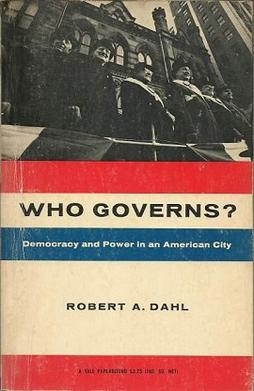
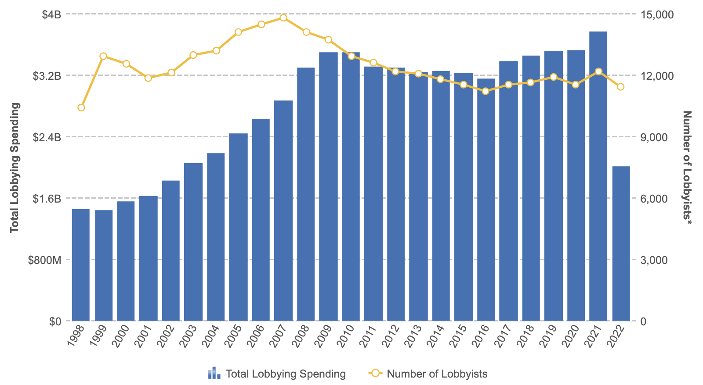

<!DOCTYPE html>
<html lang="en">
  <head>
    <meta charset="utf-8" />
    <meta name="viewport" content="width=device-width, initial-scale=1.0, maximum-scale=1.0, user-scalable=no" />

    <title></title>
    <link rel="stylesheet" href="dist/reveal.css" />
    <link rel="stylesheet" href="css/stefano.css" id="theme" />
    <link rel="stylesheet" href="plugin/highlight/zenburn.css" />
	<link rel="stylesheet" href="css/layout.css" />
	<link rel="stylesheet" href="plugin/customcontrols/style.css">


    <script defer src="dist/fontawesome/all.min.js"></script>

	<script type="text/javascript">
		var forgetPop = true;
		function onPopState(event) {
			if(forgetPop){
				forgetPop = false;
			} else {
				parent.postMessage(event.target.location.href, "app://obsidian.md");
			}
        }
		window.onpopstate = onPopState;
		window.onmessage = event => {
			if(event.data == "reload"){
				window.document.location.reload();
			}
			forgetPop = true;
		}

		function fitElements(){
			const itemsToFit = document.getElementsByClassName('fitText');
			for (const item in itemsToFit) {
				if (Object.hasOwnProperty.call(itemsToFit, item)) {
					var element = itemsToFit[item];
					fitElement(element,1, 1000);
					element.classList.remove('fitText');
				}
			}
		}

		function fitElement(element, start, end){

			let size = (end + start) / 2;
			element.style.fontSize = `${size}px`;

			if(Math.abs(start - end) < 1){
				while(element.scrollHeight > element.offsetHeight){
					size--;
					element.style.fontSize = `${size}px`;
				}
				return;
			}

			if(element.scrollHeight > element.offsetHeight){
				fitElement(element, start, size);
			} else {
				fitElement(element, size, end);
			}		
		}


		document.onreadystatechange = () => {
			fitElements();
			if (document.readyState === 'complete') {
				if (window.location.href.indexOf("?export") != -1){
					parent.postMessage(event.target.location.href, "app://obsidian.md");
				}
				if (window.location.href.indexOf("print-pdf") != -1){
					let stateCheck = setInterval(() => {
						clearInterval(stateCheck);
						window.print();
					}, 250);
				}
			}
	};


        </script>
  </head>
  <body>
    <div class="reveal">
      <div class="slides"><section ><section data-markdown><script type="text/template"><!-- .slide: class="drop" -->
<div class="" style="position: absolute; left: 0px; top: 0px; height: 700px; width: 960px; min-height: 700px; display: flex; flex-direction: column; align-items: center; justify-content: center" absolute="true">

# Interest Groups and Economic Policies
</div></script></section><section data-markdown><script type="text/template"><!-- .slide: class="drop" -->
<div class="" style="position: absolute; left: 0px; top: 0px; height: 700px; width: 960px; min-height: 700px; display: flex; flex-direction: column; align-items: center; justify-content: center" absolute="true">

## Outline

- **Voters** vs. **Interest Groups:** whose Interests Matter?
- **Pluralism** and its critics
- Lobbying & **Exchange** Theories of Interest Groups
- **Structural** **Power** of Business
- **Neopluralism**
</div></script></section></section><section ><section data-markdown><script type="text/template"><!-- .slide: class="drop" -->
<div class="" style="position: absolute; left: 0px; top: 0px; height: 700px; width: 960px; min-height: 700px; display: flex; flex-direction: column; align-items: center; justify-content: center" absolute="true">

## Interest-Based Approaches: Whose Interests Matter?

- &shy;<!-- .element: class="fragment" data-fragment-index="1" -->**Voters**
	- &shy;<!-- .element: class="fragment" data-fragment-index="2" -->**Voters** influence actions of politicians through the **elections**
	- &shy;<!-- .element: class="fragment" data-fragment-index="3" -->Voters’ attention to highly complex issues is often limited, superficial, and brief.
- &shy;<!-- .element: class="fragment" data-fragment-index="4" -->**Interest Groups**
	- &shy;<!-- .element: class="fragment" data-fragment-index="5" -->Focus on the resources and strategies used by different organized **groups** to exert influence on **individual issues**
</div></script></section><section data-markdown><script type="text/template"><!-- .slide: class="drop" -->
<div class="" style="position: absolute; left: 0px; top: 0px; height: 700px; width: 960px; min-height: 700px; display: flex; flex-direction: column; align-items: center; justify-content: center" absolute="true">

## Pluralism
</div></script></section><section data-markdown><script type="text/template"><!-- .slide: class="drop" -->
<div class="" style="position: absolute; left: 0px; top: 0px; height: 700px; width: 960px; min-height: 700px; display: flex; flex-direction: column; align-items: center; justify-content: center" absolute="true">

## Truman (1951): The Governmental Process
- **Interest groups** form when an economic or social disturbance adversely affects people or institutions.
- **Mobilization** of groups demanding policy change lead to the **counter-mobilization** of other groups opposing change
</div></script></section><section data-markdown><script type="text/template"><!-- .slide: class="drop" -->
<div class="" style="position: absolute; left: 0px; top: 0px; height: 700px; width: 960px; min-height: 700px; display: flex; flex-direction: column; align-items: center; justify-content: center" absolute="true">

## Truman (1951): The Governmental Process


<div class="mermaid">
graph TD
A(Pollution creates health problems)
B(Citizens form environmental groups, demand regualtion)
C(Polluters form industrial lobbies against regulation)

A -->B -->C


</div>
</div></script></section><section data-markdown><script type="text/template"><!-- .slide: class="drop" -->
<div class="" style="position: absolute; left: 0px; top: 0px; height: 700px; width: 960px; min-height: 700px; display: flex; flex-direction: column; align-items: center; justify-content: center" absolute="true">


</div></script></section><section data-markdown><script type="text/template"><!-- .slide: class="drop" -->
<div class="" style="position: absolute; left: 0px; top: 0px; height: 700px; width: 960px; min-height: 700px; display: flex; flex-direction: column; align-items: center; justify-content: center" absolute="true">

## Dahl (1961): Who Governs?

- &shy;<!-- .element: class="fragment" data-fragment-index="1" -->Policymaking process involves mutual adjustment among **many** competing individuals, groups, institutions.
- &shy;<!-- .element: class="fragment" data-fragment-index="2" -->**Competition** between interest groups benefits the public interest
</div></script></section><section data-markdown><script type="text/template"><!-- .slide: class="drop" -->
<div class="" style="position: absolute; left: 0px; top: 0px; height: 700px; width: 960px; min-height: 700px; display: flex; flex-direction: column; align-items: center; justify-content: center" absolute="true">

## Olson (1965): Logic of Collective Action

- &shy;<!-- .element: class="fragment" data-fragment-index="1" -->‘*Rational self-interested individuals will not act to achieve their group interests*’
- &shy;<!-- .element: class="fragment" data-fragment-index="2" -->**Small/concentrated interests** (e.g. producers) who have a large stake in a policy are more likely to than **large/disperse groups** (e.g. consumers)  where each individual has a small stake
- &shy;<!-- .element: class="fragment" data-fragment-index="3" -->Many interests in society remain “latent”
</div></script></section><section data-markdown><script type="text/template"><!-- .slide: class="drop" -->
<div class="" style="position: absolute; left: 0px; top: 0px; height: 700px; width: 960px; min-height: 700px; display: flex; flex-direction: column; align-items: center; justify-content: center" absolute="true">

## Which groups are lobbying? Evidence from consultations


Source: Pagliari and Young (2015)
</div></script></section></section><section ><section data-markdown><script type="text/template"><!-- .slide: class="drop" -->
<div class="" style="position: absolute; left: 0px; top: 0px; height: 700px; width: 960px; min-height: 700px; display: flex; flex-direction: column; align-items: center; justify-content: center" absolute="true">

## Understanding Interest Group Influence
</div></script></section><section data-markdown><script type="text/template"><!-- .slide: class="drop" -->
<div class="" style="position: absolute; left: 0px; top: 0px; height: 700px; width: 960px; min-height: 700px; display: flex; flex-direction: column; align-items: center; justify-content: center" absolute="true">

## Exchange Theory

- &shy;<!-- .element: class="fragment" data-fragment-index="1" -->Economic policies as a **marketplace** where policymakers and organized interest make rational exchanges
- &shy;<!-- .element: class="fragment" data-fragment-index="2" -->Interest groups provide policymakers with **resources** that allow them to further their goals (e.g. reelection, making good policy)
- &shy;<!-- .element: class="fragment" data-fragment-index="3" -->Policymakers design policies that benefit organized interests    
- &shy;<!-- .element: class="fragment" data-fragment-index="4" -->Focus on the **resources** that different groups can deploy to “buy” policies
</div></script></section><section data-markdown><script type="text/template"><!-- .slide: class="drop" -->
<div class="" style="position: absolute; left: 0px; top: 0px; height: 700px; width: 960px; min-height: 700px; display: flex; flex-direction: column; align-items: center; justify-content: center" absolute="true">

## Money and Politics


</div></script></section><section data-markdown><script type="text/template"><!-- .slide: class="drop" -->
<div class="" style="position: absolute; left: 0px; top: 0px; height: 700px; width: 960px; min-height: 700px; display: flex; flex-direction: column; align-items: center; justify-content: center" absolute="true">

## Money and Politics

- &shy;<!-- .element: class="fragment" data-fragment-index="1" -->**Bribery**  
	- &shy;<!-- .element: class="fragment" data-fragment-index="2" -->Monetary gift in exchange for policy.
- &shy;<!-- .element: class="fragment" data-fragment-index="3" -->**Lobbying**
	- &shy;<!-- .element: class="fragment" data-fragment-index="4" -->Legal activity; petitioning policymakers for policy change
	- &shy;<!-- .element: class="fragment" data-fragment-index="5" -->Money allow groups to hire lobbyists, acquire information and monitor the policymaking process
- &shy;<!-- .element: class="fragment" data-fragment-index="6" -->**Campaign contributions**
	- &shy;<!-- .element: class="fragment" data-fragment-index="7" -->**US:** interest groups allowed to spend unlimited amounts in advertisements for or against a candidate (Citizens United v. Federal Election Commission 2010)
	- &shy;<!-- .element: class="fragment" data-fragment-index="8" -->**Outside of US:** Limitations on campaign contributions in several jurisdictions
</div></script></section><section data-markdown><script type="text/template"><!-- .slide: class="drop" -->
<div class="" style="position: absolute; left: 0px; top: 0px; height: 700px; width: 960px; min-height: 700px; display: flex; flex-direction: column; align-items: center; justify-content: center" absolute="true">

## Lobbying in the US



Source: Center for Responsive Politics
</div></script></section><section data-markdown><script type="text/template"><!-- .slide: class="drop" -->
<div class="" style="position: absolute; left: 0px; top: 0px; height: 700px; width: 960px; min-height: 700px; display: flex; flex-direction: column; align-items: center; justify-content: center" absolute="true">

## Lobbying in the US (2018-22)

| Lobbying                                   | Client Total Spent |
| ------------------------------------------ | ------------------ |
| US Chamber of Commerce                     | $1766970680        |
| National Assn of Realtors                  | $742553133         |
| American Hospital Assn                     | $480046146         |
| American Medical Assn                      | $473519500         |
| PhRMA | $464875550         |
| Blue Cross/Blue Shield                     | $435793406         |
| General Electric                           | $378792000         |
| Business Roundtable                        | $359380000         |
| Boeing Co                                  | $320858310         |
| Northrop Grumman                           | $315335213         |       |

Source: [Center for Responsive Politics](https://www.opensecrets.org/federal-lobbying/top-spenders?cycle=a)
</div></script></section><section data-markdown><script type="text/template"><!-- .slide: class="drop" -->
<div class="" style="position: absolute; left: 0px; top: 0px; height: 700px; width: 960px; min-height: 700px; display: flex; flex-direction: column; align-items: center; justify-content: center" absolute="true">

## Lobbying in the US (2021)

| Lobbying Client                                    | Total Spent |
| -------------------------------------------------- | ----------- |
| US Chamber of Commerce                             | $66410000   |
| National Assn of Realtors                          | $44004025   |
| PhRMA | $30406000   |
| Business Roundtable                                | $29120000   |
| American Hospital Association                      | $25215934   |
| Blue Cross/Blue Shield                             | $25176385   |
| Meta                                               | $20070000   |
| American Medical Association                       | $19490000   |
| Amazon.com                                         | $19320000   |
| American Chemistry Council                         | $16640000   |


Source: [Center for Responsive Politics](https://www.opensecrets.org/federal-lobbying/top-spenders?cycle=a)
</div></script></section><section data-markdown><script type="text/template"><!-- .slide: class="drop" -->
<div class="" style="position: absolute; left: 0px; top: 0px; height: 700px; width: 960px; min-height: 700px; display: flex; flex-direction: column; align-items: center; justify-content: center" absolute="true">

## Top Donors to UK Parties (2021)

|RegulatedEntityName            |DonorName                                     |DonorStatus               |Value       |
|-------------------------------|----------------------------------------------|--------------------------|------------|
|Conservative |Mr Albert Snape                               |Individual                |£425,033.57 |
|Labour Party                   |UNISON                                        |Trade Union               |£291,575.00 |
|Labour Party                   |GMB                                           |Trade Union               |£290,125.00 |
|Labour Party                   |Union of Shop, Distributive and Allied Workers|Trade Union               |£254,358.58 |
|Labour Party                   |Union of Shop, Distributive and Allied Workers|Trade Union               |£254,358.58 |
|Conservative |National Conservative Draws Society           |Unincorporated Association|£250,000.00 |
|Conservative |Mr Mark Coombs                                |Individual                |£250,000.00 |
|SNP  |Dr Norman Allan                               |Individual                |£250,000.00 |
|Labour                  |Ms Francesca Perrin                           |Individual                |£250,000.00 |
|Labour                   |UNISON                                        |Trade Union               |£190,000.00 |
|Conservative| Andrew Bell                                  |Individual                |£150,000.00 |

Source: [Electoral Commission](http://search.electoralcommission.org.uk/Search?currentPage=1&rows=10&sort=Value&order=desc&tab=2&open=filter&et=pp&et=ppm&isIrishSourceYes=true&isIrishSourceNo=true&date=Accepted&from=2021-04-01&to=2021-06-30&quarters=2021Q1234&prePoll=false&postPoll=true&donorStatus=individual&donorStatus=tradeunion&donorStatus=company&donorStatus=unincorporatedassociation&register=ni&register=gb&register=none&optCols=Register&optCols=IsIrishSource&optCols=ReportingPeriodName)
</div></script></section></section><section  data-markdown><script type="text/template"><!-- .slide: class="drop" -->
<div class="" style="position: absolute; left: 0px; top: 0px; height: 700px; width: 960px; min-height: 700px; display: flex; flex-direction: column; align-items: center; justify-content: center" absolute="true">

## Lobbying and Information


</div></script></section><section  data-markdown><script type="text/template"><!-- .slide: class="drop" -->
<div class="" style="position: absolute; left: 0px; top: 0px; height: 700px; width: 960px; min-height: 700px; display: flex; flex-direction: column; align-items: center; justify-content: center" absolute="true">

## Lobbying and Information

- &shy;<!-- .element: class="fragment" data-fragment-index="1" -->**Information asymmetries** & economic policies
	- &shy;<!-- .element: class="fragment" data-fragment-index="2" -->Interest groups possess unique information on issues affecting them
	- &shy;<!-- .element: class="fragment" data-fragment-index="3" -->Interest groups can influence policy by selectively providing information to decision-makers
- &shy;<!-- .element: class="fragment" data-fragment-index="4" -->Lobbying as a “**legislative subsidy**” (Hall and Deardorff 2006) to support like-minded policymakers
	- &shy;<!-- .element: class="fragment" data-fragment-index="5" -->Role of lobbyists in directly drafting legislation for policymakers (Schlozman and Tierney 1983)
</div></script></section><section ><section data-markdown><script type="text/template"><!-- .slide: class="drop" -->
<div class="" style="position: absolute; left: 0px; top: 0px; height: 700px; width: 960px; min-height: 700px; display: flex; flex-direction: column; align-items: center; justify-content: center" absolute="true">

## Access to the Policymaking Process

- &shy;<!-- .element: class="fragment" data-fragment-index="1" -->Formal and informal institutional arrangements determine the level of access that different groups have to the policymakers
- &shy;<!-- .element: class="fragment" data-fragment-index="2" -->**Formal  institutions**
	- &shy;<!-- .element: class="fragment" data-fragment-index="3" -->e.g. consultations with stakeholders
- &shy;<!-- .element: class="fragment" data-fragment-index="4" -->**Informal institutions**
	- &shy;<!-- .element: class="fragment" data-fragment-index="5" -->e.g. revolving doors, clubs, elite networks
</div></script></section><section data-markdown><script type="text/template"><!-- .slide: class="drop" -->
<div class="" style="position: absolute; left: 0px; top: 0px; height: 700px; width: 960px; min-height: 700px; display: flex; flex-direction: column; align-items: center; justify-content: center" absolute="true">

## Iron Triangle

- Alliances among **bureaucratic agencies**, **interest groups**, and **Congressional subcommittee members and staff** to promote their common causes (Lowi 1969).

<br>


<small class="caption">Source: Wikimedia</small>
</div></script></section><section data-markdown><script type="text/template"><!-- .slide: class="drop" -->
<div class="" style="position: absolute; left: 0px; top: 0px; height: 700px; width: 960px; min-height: 700px; display: flex; flex-direction: column; align-items: center; justify-content: center" absolute="true">

## Social corporatism

- Institutionalized bargaining on economic policies among state agencies & organized business and labor (Schmitter 1974)

<br>


<small class="caption">Source: [Espresso](https://espresso.repubblica.it/opinioni/si-puo-fare/2014/11/04/news/chi-ha-ucciso-la-concertazione-1.186463/)</small>
</div></script></section><section data-markdown><script type="text/template"><!-- .slide: class="drop" -->
<div class="" style="position: absolute; left: 0px; top: 0px; height: 700px; width: 960px; min-height: 700px; display: flex; flex-direction: column; align-items: center; justify-content: center" absolute="true">

## “Revolving doors” between government and business


<small class="caption">Source: [Chicago Booth Review](https://www.chicagobooth.edu/review/should-we-stop-revolving-door)</small>
</div></script></section></section><section ><section data-markdown><script type="text/template"><!-- .slide: class="drop" -->
<div class="" style="position: absolute; left: 0px; top: 0px; height: 700px; width: 960px; min-height: 700px; display: flex; flex-direction: column; align-items: center; justify-content: center" absolute="true">

## Structural Power of Business
</div></script></section><section data-markdown><script type="text/template"><!-- .slide: class="drop" -->
<div class="" style="position: absolute; left: 0px; top: 0px; height: 700px; width: 960px; min-height: 700px; display: flex; flex-direction: column; align-items: center; justify-content: center" absolute="true">

## Lindblom (1977): "privileged position of business"
- &shy;<!-- .element: class="fragment" data-fragment-index="1" -->**Growth** and **employment** in capitalist nations dependent on investments by business groups
- &shy;<!-- .element: class="fragment" data-fragment-index="2" -->Governments seeking re-election will avoid policies undermining **business confidence and profitability**
- &shy;<!-- .element: class="fragment" data-fragment-index="3" -->“**Prison of the marketplace**”: preferences of business define which economic policies are debated and considered
</div></script></section><section data-markdown><script type="text/template"><!-- .slide: class="drop" -->
<div class="" style="position: absolute; left: 0px; top: 0px; height: 700px; width: 960px; min-height: 700px; display: flex; flex-direction: column; align-items: center; justify-content: center" absolute="true">

## Capital Mobility Hypothesis
- &shy;<!-- .element: class="fragment" data-fragment-index="1" -->**Globalization** grants business capacity to relocate activities in a different country (Andrews 1994)
- &shy;<!-- .element: class="fragment" data-fragment-index="2" -->Governments to **compete** for investments by lowering corporate taxes (Wallerstein & Przeworski 1995)
</div></script></section><section data-markdown><script type="text/template"><!-- .slide: class="drop" -->
<div class="" style="position: absolute; left: 0px; top: 0px; height: 700px; width: 960px; min-height: 700px; display: flex; flex-direction: column; align-items: center; justify-content: center" absolute="true">

## Limitations of Structural Power

- &shy;<!-- .element: class="fragment" data-fragment-index="1" -->Business not especially successful in keeping items off the agenda (e.g. environmental regulation) (Vogel 1987)
</div></script></section></section><section ><section data-markdown><script type="text/template"><!-- .slide: class="drop" -->
<div class="" style="position: absolute; left: 0px; top: 0px; height: 700px; width: 960px; min-height: 700px; display: flex; flex-direction: column; align-items: center; justify-content: center" absolute="true">

## Neopluralism

- &shy;<!-- .element: class="fragment" data-fragment-index="1" -->Resource advantage enjoyed by business is real but not decisive (Baumgartner et al. 2009)
	- &shy;<!-- .element: class="fragment" data-fragment-index="2" -->Business groups often fail to achieve their policy preferences
	- &shy;<!-- .element: class="fragment" data-fragment-index="3" -->**Contingent** nature of business power
- &shy;<!-- .element: class="fragment" data-fragment-index="4" -->Different groups are able to influence public policy.
	- &shy;<!-- .element: class="fragment" data-fragment-index="5" -->Focus on **competition** among interests outside and within the business world.
	- &shy;<!-- .element: class="fragment" data-fragment-index="6" -->Focus on **context** where policy- decisions are taken
</div></script></section><section data-markdown><script type="text/template"><!-- .slide: class="drop" -->
<div class="" style="position: absolute; left: 0px; top: 0px; height: 700px; width: 960px; min-height: 700px; display: flex; flex-direction: column; align-items: center; justify-content: center" absolute="true">

## Workers vs. Business


<small class="caption">Source: [CEPR](https://cepr.org/voxeu/columns/state-trade-unions-employer-organisations-and-collective-bargaining-oecd-countries)</small>
</div></script></section><section data-markdown><script type="text/template"><!-- .slide: class="drop" -->
<div class="" style="position: absolute; left: 0px; top: 0px; height: 700px; width: 960px; min-height: 700px; display: flex; flex-direction: column; align-items: center; justify-content: center" absolute="true">

## Workers vs. Business

- &shy;<!-- .element: class="fragment" data-fragment-index="1" -->**Class-based** approaches
	- &shy;<!-- .element: class="fragment" data-fragment-index="2" -->conflict between preferences of business groups and those of **workers** on most economic policies
- &shy;<!-- .element: class="fragment" data-fragment-index="3" -->Business and workers: **friends or foes**?
	- &shy;<!-- .element: class="fragment" data-fragment-index="4" -->Hiscox (2002): when the fortunes of workers and capital are tied to one particular industry, their preferences converge
	- &shy;<!-- .element: class="fragment" data-fragment-index="5" -->De-industrialization and decline of traditional class- based cleavage
</div></script></section><section data-markdown><script type="text/template"><!-- .slide: class="drop" -->
<div class="" style="position: absolute; left: 0px; top: 0px; height: 700px; width: 960px; min-height: 700px; display: flex; flex-direction: column; align-items: center; justify-content: center" absolute="true">

## Variation in power of trade unions


<small class="caption">Source: Afonso 2017</small>
</div></script></section><section data-markdown><script type="text/template"><!-- .slide: class="drop" -->
<div class="" style="position: absolute; left: 0px; top: 0px; height: 700px; width: 960px; min-height: 700px; display: flex; flex-direction: column; align-items: center; justify-content: center" absolute="true">

## Decline in membership of trade unions since WW2


</div></script></section></section><section ><section data-markdown><script type="text/template"><!-- .slide: class="drop" -->
<div class="" style="position: absolute; left: 0px; top: 0px; height: 700px; width: 960px; min-height: 700px; display: flex; flex-direction: column; align-items: center; justify-content: center" absolute="true">

# Business vs. Business
</div></script></section><section data-markdown><script type="text/template"><!-- .slide: class="drop" -->
<div class="" style="position: absolute; left: 0px; top: 0px; height: 700px; width: 960px; min-height: 700px; display: flex; flex-direction: column; align-items: center; justify-content: center" absolute="true">

## Determinants of Business Conflict


- &shy;<!-- .element: class="fragment" data-fragment-index="1" -->National vs. international firms
- &shy;<!-- .element: class="fragment" data-fragment-index="2" -->Technological leaders vs. Laggards within same sector
- &shy;<!-- .element: class="fragment" data-fragment-index="3" -->Firms on different positions of production chain (e.g. producers vs. retailers)
</div></script></section><section data-markdown><script type="text/template"><!-- .slide: class="drop" -->
<div class="" style="position: absolute; left: 0px; top: 0px; height: 700px; width: 960px; min-height: 700px; display: flex; flex-direction: column; align-items: center; justify-content: center" absolute="true">

## Determinants of business solidarity

- &shy;<!-- .element: class="fragment" data-fragment-index="1" -->Structure of **Business Associations:** 
	- &shy;<!-- .element: class="fragment" data-fragment-index="2" -->Stronger associations in Japan and continental Europe; 
	- &shy;<!-- .element: class="fragment" data-fragment-index="3" -->fragmented in UK and US
- &shy;<!-- .element: class="fragment" data-fragment-index="4" -->Ownership structure and Ties among the members of family controlled firms 
	- &shy;<!-- .element: class="fragment" data-fragment-index="5" -->e.g. Chaebol in S. Korea
- &shy;<!-- .element: class="fragment" data-fragment-index="6" -->**Corporate interlocks**
- &shy;<!-- .element: class="fragment" data-fragment-index="7" -->Elite networks and forum (e.g. Davos Summit)
</div></script></section><section data-markdown><script type="text/template"><!-- .slide: class="drop" -->
<div class="" style="position: absolute; left: 0px; top: 0px; height: 700px; width: 960px; min-height: 700px; display: flex; flex-direction: column; align-items: center; justify-content: center" absolute="true">

# Business vs. Public Opinion
</div></script></section><section data-markdown><script type="text/template"><!-- .slide: class="drop" -->
<div class="" style="position: absolute; left: 0px; top: 0px; height: 700px; width: 960px; min-height: 700px; display: flex; flex-direction: column; align-items: center; justify-content: center" absolute="true">

## Quiet Politics
- &shy;<!-- .element: class="fragment" data-fragment-index="1" -->Lack of attention by voters
- &shy;<!-- .element: class="fragment" data-fragment-index="2" -->Limited involvement of politicians and membership-based groups.
- &shy;<!-- .element: class="fragment" data-fragment-index="3" -->**Inside-lobbying:** meetings with policymakers and strategic provision of information as key forms of lobbying
- &shy;<!-- .element: class="fragment" data-fragment-index="4" -->Culpepper (2011): Business power is greater during periods of quiet politics
</div></script></section><section data-markdown><script type="text/template"><!-- .slide: class="drop" -->
<div class="" style="position: absolute; left: 0px; top: 0px; height: 700px; width: 960px; min-height: 700px; display: flex; flex-direction: column; align-items: center; justify-content: center" absolute="true">

## Noisy Politics

- &shy;<!-- .element: class="fragment" data-fragment-index="1" -->Issue attract significant attention among voters
- &shy;<!-- .element: class="fragment" data-fragment-index="2" -->Greater involvement of politicians and public interest groups
- &shy;<!-- .element: class="fragment" data-fragment-index="3" -->**Outside-lobbying:** interest groups generate mass campaigns to influence public opinion
</div></script></section></section><section ><section data-markdown><script type="text/template"><!-- .slide: class="drop" -->
<div class="" style="position: absolute; left: 0px; top: 0px; height: 700px; width: 960px; min-height: 700px; display: flex; flex-direction: column; align-items: center; justify-content: center" absolute="true">

## Activities


- Thinking about contemporary or past economic policies or outcomes, provide one example of
	- Business groups successfully shaping economic policies
	- Business groups lacking power over economic policies
</div></script></section><section data-markdown><script type="text/template"><!-- .slide: class="drop" -->
<div class="" style="position: absolute; left: 0px; top: 0px; height: 700px; width: 960px; min-height: 700px; display: flex; flex-direction: column; align-items: center; justify-content: center" absolute="true">

## Activity: Which of these economic policies are more likely to reflect the preferences of business groups? Which groups?
- Regulation of animal testing on pharmaceutical products
- Deregulation of financial services
- Regulation of the use of chemicals in industrial production
- Change in interest rates (monetary policy)
- Restrictions in workers' right to strike
- Post-Brexit trade negotiations
</div></script></section><section data-markdown><script type="text/template"><!-- .slide: class="drop" -->
<div class="" style="position: absolute; left: 0px; top: 0px; height: 700px; width: 960px; min-height: 700px; display: flex; flex-direction: column; align-items: center; justify-content: center" absolute="true">

## Activity: How does the political influence of business community vary across countries?

- Provide one example of a country where you think the business community is particularly powerful
- Provide one example of country where you think the business community is particularly weak
</div></script></section></section></div>
    </div>

    <script src="dist/reveal.js"></script>

    <script src="plugin/markdown/markdown.js"></script>
    <script src="plugin/highlight/highlight.js"></script>
    <script src="plugin/zoom/zoom.js"></script>
    <script src="plugin/notes/notes.js"></script>
    <script src="plugin/math/math.js"></script>
	<script src="plugin/mermaid/mermaid.js"></script>
	<script src="plugin/chart/chart.min.js"></script>
	<script src="plugin/chart/plugin.js"></script>
	<script src="plugin/menu/menu.js"></script>
	<script src="plugin/customcontrols/plugin.js"></script>

    <script>
      function extend() {
        var target = {};
        for (var i = 0; i < arguments.length; i++) {
          var source = arguments[i];
          for (var key in source) {
            if (source.hasOwnProperty(key)) {
              target[key] = source[key];
            }
          }
        }
        return target;
      }

	  function isLight(color) {
		let hex = color.replace('#', '');

		// convert #fff => #ffffff
		if(hex.length == 3){
			hex = `${hex[0]}${hex[0]}${hex[1]}${hex[1]}${hex[2]}${hex[2]}`;
		}

		const c_r = parseInt(hex.substr(0, 2), 16);
		const c_g = parseInt(hex.substr(2, 2), 16);
		const c_b = parseInt(hex.substr(4, 2), 16);
		const brightness = ((c_r * 299) + (c_g * 587) + (c_b * 114)) / 1000;
		return brightness > 155;
	}

	var bgColor = getComputedStyle(document.documentElement).getPropertyValue('--r-background-color').trim();

	if(isLight(bgColor)){
		document.body.classList.add('has-light-background');
	} else {
		document.body.classList.add('has-dark-background');
	}

      // default options to init reveal.js
      var defaultOptions = {
        controls: true,
        progress: true,
        history: true,
        center: true,
        transition: 'default', // none/fade/slide/convex/concave/zoom
        plugins: [
          RevealMarkdown,
          RevealHighlight,
          RevealZoom,
          RevealNotes,
          RevealMath.MathJax3,
		  RevealMermaid,
		  RevealChart,
		  RevealCustomControls,
		  RevealMenu,
        ],


    	allottedTime: 120 * 1000,

		mathjax3: {
			mathjax: 'plugin/math/mathjax/tex-mml-chtml.js',
		},
		markdown: {
		  gfm: true,
		  mangle: true,
		  pedantic: false,
		  smartLists: false,
		  smartypants: false,
		},

		customcontrols: {
			controls: [
				{id: 'toggle-overview',
				title: 'Toggle overview (O)',
				icon: '<i class="fa fa-th"></i>',
				action: 'Reveal.toggleOverview();'
				},
			]
		},
		menu: {
			loadIcons: false
		}
      };

      // options from URL query string
      var queryOptions = Reveal().getQueryHash() || {};

      var options = extend(defaultOptions, {"width":960,"height":700,"margin":0.04,"controls":true,"progress":true,"slideNumber":true,"transition":"fade","transitionSpeed":"slow"}, queryOptions);
    </script>

    <script>
      Reveal.initialize(options);
    </script>
  </body>

  <!-- created with Advanced Slides -->
</html>
